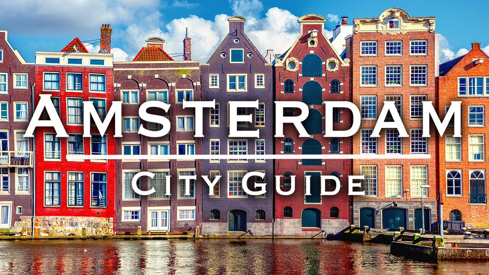

Amsterdam

Столиця Нідерландів, Амстердам у багатьох відношеннях примітне місто. Його люблять місцеві жителі, в нього прагнуть натовпи туристів Все це не дивно, адже амстердамські вулиці буквально наскрізь просякнуті духом історії.
- Амстердам найбільше місто Нідерландів і за сумісництвом столиця країни.
- Незважаючи на це, голландський уряд розташований в місті Гаага.
- Амстердам шоста за величиною європейська столиця.
- В Амстердамі більше тисячі двохсот мостів, тобто більше, ніж у Венеції.
- В цьому місті розташована найбільша в світі кількість музеїв.
- Амстердам розташований нижче рівня моря.
- Найпопулярніший в Амстердамі транспорт велосипед, їх тут більше мільйона, тобто на третину більше, ніж людей.
- На весь Амстердам припадає лише дві дерев’яні будівлі.
- В Амстердамі проживають представники понад півтори сотні національностей.
- Щорічно Амстердам відвідують близько чотирьох з половиною мільйонів туристів.
- Велосипедні доріжки в Амстердамі ширше пішохідних.
- У всьому Амстердамі немає жодної безкоштовної парковки.
Link